Gemini: 정해진 목소리를 골라 쓰기
이 영상은 처음부터 끝까지 AI 목소리로 말해요. 첫 30초 동안 들리는 목소리는 Gemini가 만든 것이고, 그 뒤로 이어지는 진행자 목소리는 두 번째 도구인 Qwen3로 만든 복제 목소리예요. 영상 자체가 두 도구의 결과물을 들려주는 시연인 셈이에요.
구글 AI 스튜디오의 음성 생성 화면
첫 번째 방법은 구글 AI 스튜디오에서 Gemini의 TTS 기능을 쓰는 거예요. 구글 계정만 있으면 무료로 바로 쓸 수 있어요. 음성 만들기 메뉴에 들어가면 가운데에 대사 블록 하나가 나와요. 블록 위쪽에 Speaker 1 - Fola(목소리), Style(말투) 선택 칸이 있고, 아래가 텍스트를 넣는 칸이에요. 영상은 이걸 텍스트·목소리·말투 세 칸으로 설명해요. 오른쪽 패널에는 지금 쓰는 모델이 Gemini 3.8 Flash TTS라고 나와 있어요.
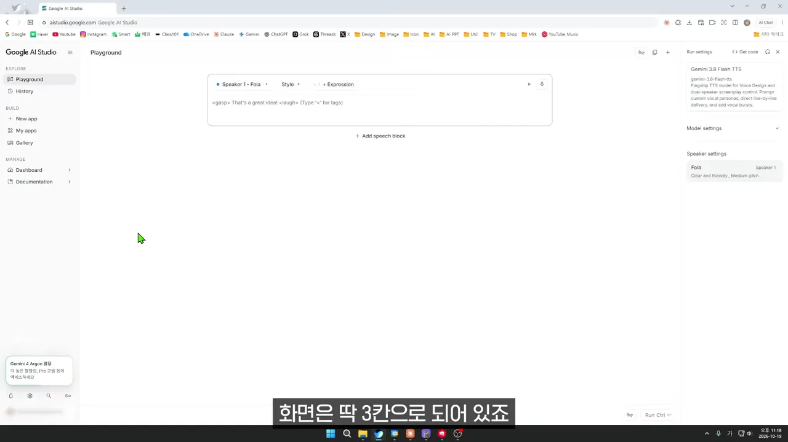
목소리는 Speaker 메뉴에서 골라요. 영상은 '수십 가지'라고 말하지만, 화면 검색창에는 Search 2,000+ voices라고 적혀 있어요. 언어·성별·음높이(Pitch)·스타일·용도로 걸러 볼 수 있고, 목소리마다 'Quiet and intimate · Low pitch' 같은 짧은 설명이 붙어 있어요. 오른쪽 재생 버튼을 누르면 고르기 전에 미리 들어 볼 수 있어요.
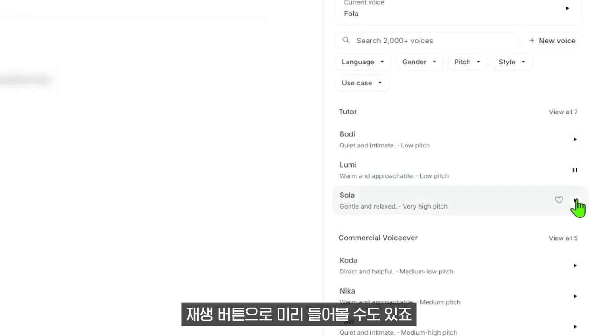
가장 중요한 건 말투예요
영상이 제일 강조하는 칸은 Style이에요. 메뉴를 열면 맨 위에 'Describe the voice style'이라는 입력 칸이 있어요. 여기에 '차분하게 설명하듯이', '신나게 조금 빠르게'처럼 원하는 느낌을 그냥 글로 적으면 돼요. 아래에는 Whisper(속삭이듯), Friendly, Narration, Promote 같은 기본 말투도 준비돼 있어요.
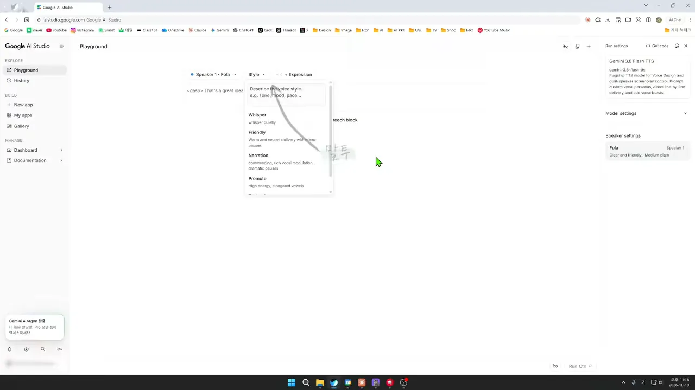
영상은 같은 문장을 말투만 바꿔서 두 번 들려줘요. '오늘 회의는 여기까지 하겠습니다'를 차분하게 하면 잔잔하게, 신나게 하면 높낮이가 크게 출렁이는 목소리로 나와요. 실행을 누르면 몇 초 만에 결과가 나오고, 다운로드 버튼으로 바로 저장할 수 있어요.
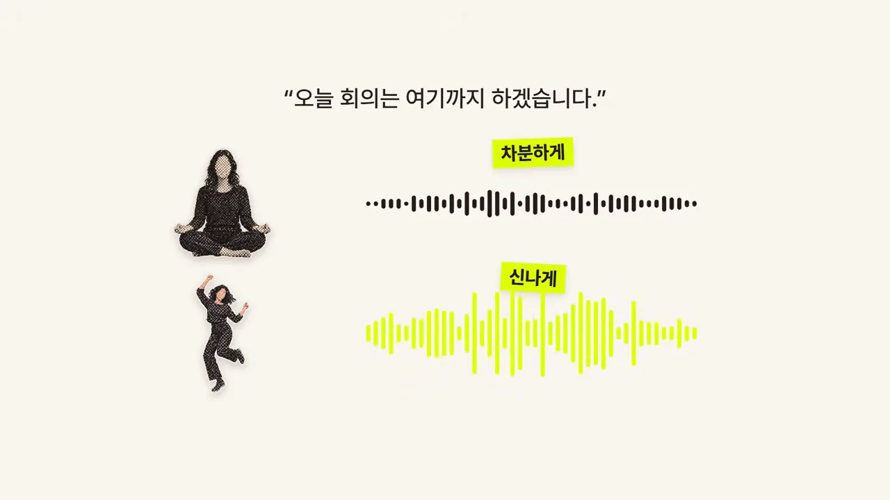
두 사람 대화도 만들 수 있어요
대사 블록을 하나 더 추가하면 두 사람이 주고받는 대화가 돼요. 화면에서는 진행자 역할의 Speaker 1 - Nika와 손님 역할의 Speaker 2 - Mako가 번갈아 말하도록 블록 세 개를 쌓았어요. 오른쪽 Speaker settings에서 두 사람에게 각각 목소리를 정해 두면, 라디오처럼 주고받는 음성이 한 번에 나와요.
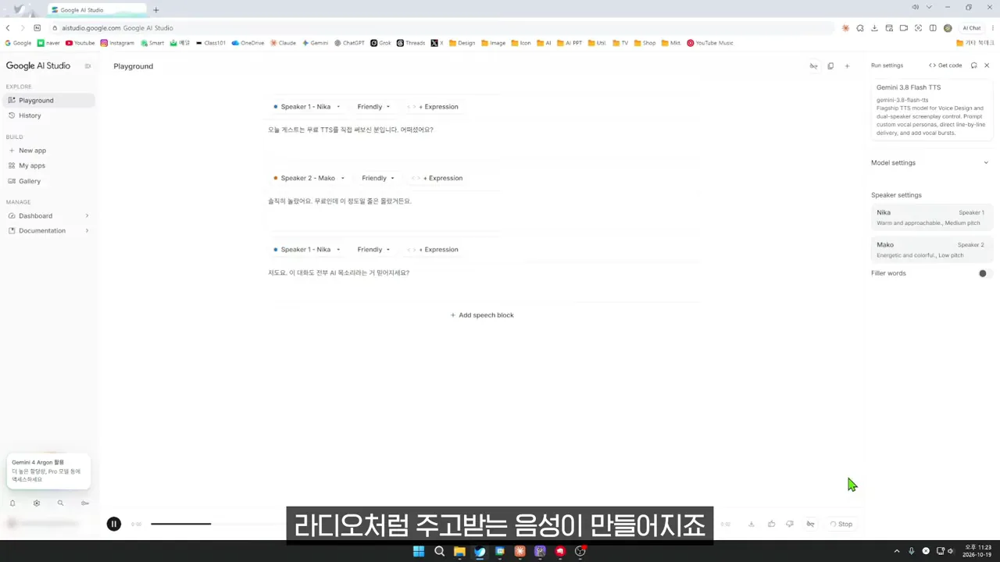
Gemini의 단점 세 가지
영상은 단점도 세 장의 카드로 짚어요. 첫째, 정해진 목소리 안에서만 골라야 해서 내 목소리는 만들 수 없어요. 둘째, 무료라서 하루에 쓸 수 있는 양이 정해져 있어요. 셋째, 무료로 쓰면 넣은 글이 구글 서비스 개선에 쓰일 수 있어요. 그래서 개인 정보 같은 건 넣지 않는 게 좋다고 해요.
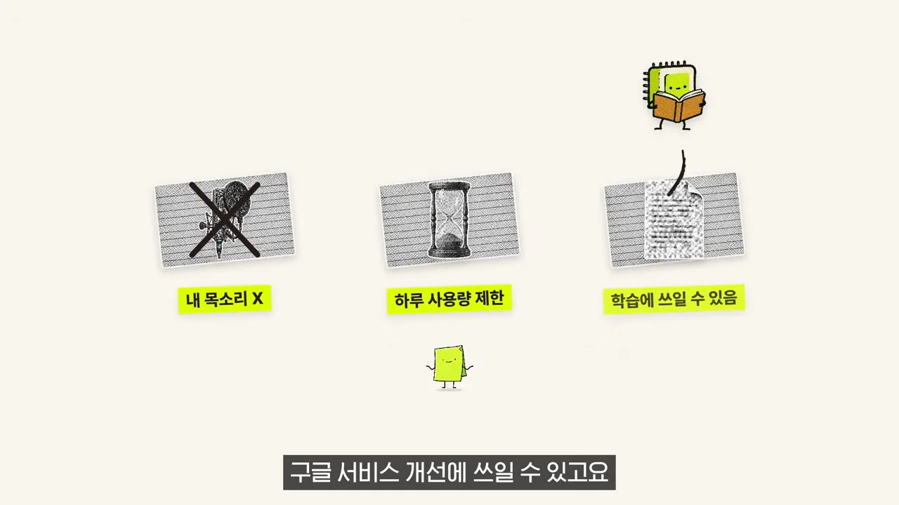
Qwen3: 15초 녹음으로 내 목소리 복제
영상은 여기서 반전을 하나 보여 줘요. 지금까지 들린 진행자 목소리가 바로 두 번째 방법인 Qwen3로 만든 복제 목소리라는 거예요. Qwen3는 알리바바가 누구나 무료로 쓸 수 있게 공개한 AI예요. 내 컴퓨터에 설치하지 않아도, 허깅페이스에 올라온 공식 체험 페이지에서 바로 써 볼 수 있어요.
체험 페이지의 목소리 복제 탭
체험 페이지 이름은 Qwen3-TTS Demo예요. 위쪽 탭이 세 개인데, 그중 가운데 Voice Clone (Base)를 고르면 돼요. 왼쪽 위 Reference Audio에 내 목소리 녹음을, 그 아래 Reference Text에 녹음에서 한 말을 받아 적은 글을 넣어요. 오른쪽 Target Text에는 새로 읽게 할 글을 넣고, 아래 보라색 Clone & Generate 버튼을 누르면 끝이에요.
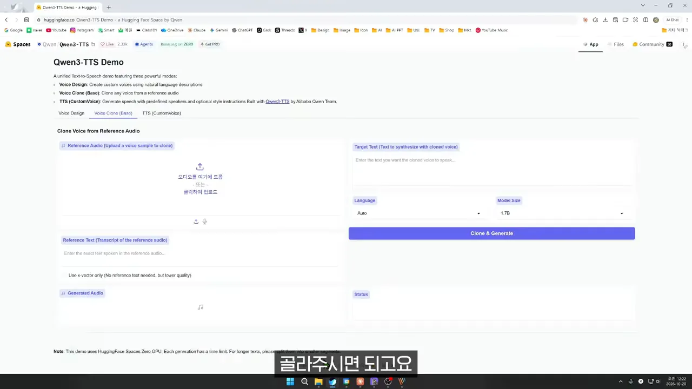
준비물은 두 가지예요. 10초에서 15초쯤 되는 내 목소리 녹음 파일, 그리고 그 녹음 내용을 그대로 받아 적은 글이에요. 여기에 읽게 할 글을 더하면 세 가지 입력이 하나의 결과로 모여요.
영상은 15초 녹음으로 '안녕하세요. 피피티프로입니다. 잘 부탁드립니다. 반갑습니다.'를 읽게 해요. 왼쪽 위에 0:15짜리 녹음 파형이, 왼쪽 아래에 생성된 6초짜리 음성이 보여요. 오른쪽 Status에는 'Voice clone generation completed successfully!'가 떠요. Language는 Korean, Model Size는 1.7B로 둔 상태예요.
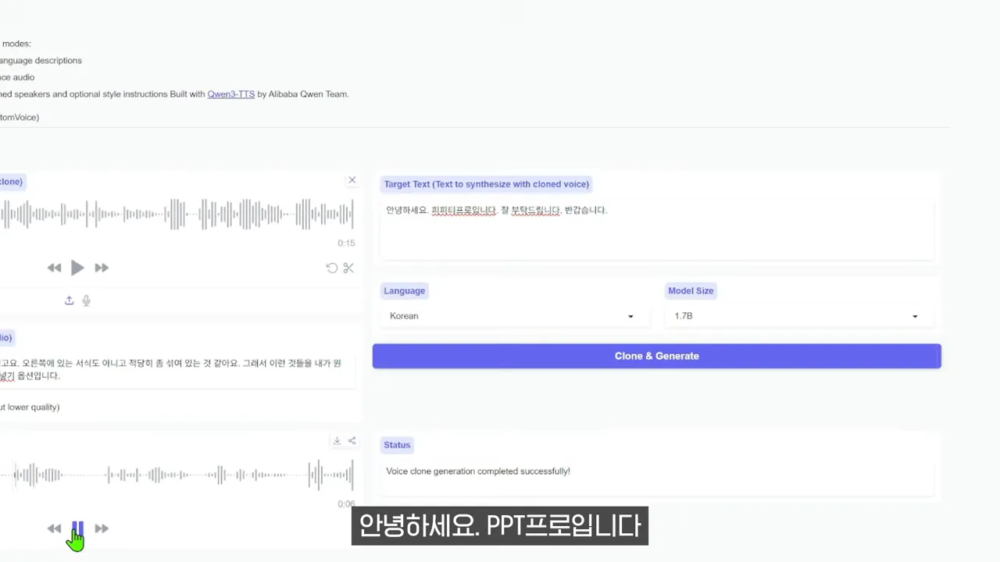
잘 만드는 팁 네 가지와 95분 vs 15초
발표자가 직접 써 보면서 알게 된 팁 네 가지예요. 이것만 지켜도 결과가 확 달라진다고 해요.
- 녹음은 조용한 곳에서 또박또박 말한 걸로 골라요 — AI는 들려준 녹음을 말버릇까지 그대로 따라 해요.
- 글은 한 문장씩 나누지 말고 한 덩어리로 넣어요 — 하나씩 만들어 이어 붙이면 문장마다 말투가 달라져서 어색해요.
- 영어와 숫자는 한글로 적어 줘요 — 그대로 두면 엉뚱하게 읽을 때가 있어요.
- 끝 글자가 잘리면 한 마디를 더 붙여요 — 만든 뒤에 덧붙인 부분만 잘라 내요.
녹음 상태가 그대로 옮겨 가요
첫 번째 팁 그림은 사람이 북적이는 카페 사진에 X를, 조용한 녹음실 사진에 체크를 쳤어요. 각 사진 아래 파형을 보면 카페 쪽은 내내 꽉 차 있고, 녹음실 쪽은 말하는 부분만 솟아 있어요. 잡음이 섞인 녹음을 주면 복제 목소리에도 그 잡음이 따라온다는 뜻이에요.
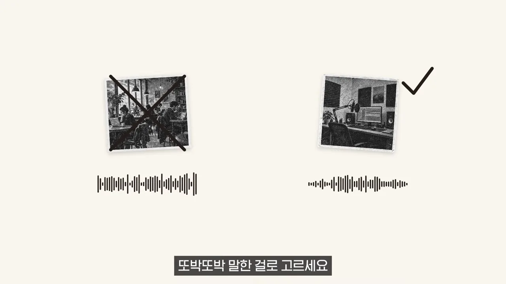
영어·숫자는 한글로, 끝은 한 마디 더
세 번째 팁 그림은 'AI 15초'를 예로 들어요. 그대로 넣으면 '아이 일오 초'처럼 읽을 수 있으니, 처음부터 '에이아이 십오 초'라고 적어 주라는 거예요. 앞 섹션 데모에서 채널 이름을 '피피티프로'라고 적은 것도 같은 이유예요.
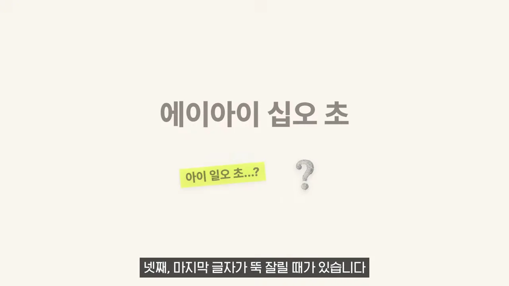
네 번째 팁 그림은 파형 끝에 점선을 긋고 '감사합니다'를 덧붙였어요. '…알려드리겠습니다'로 끝나는 글 뒤에 한 마디를 더 붙여서 만들고, 점선 뒤쪽만 잘라 내면 원래 끝 글자가 온전히 남아요.
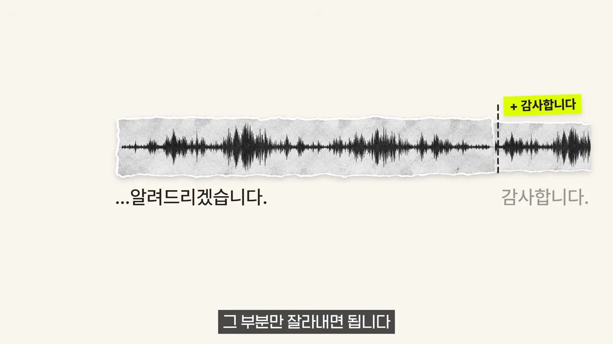
하나 더 있어요. 같은 글이라도 만들 때마다 조금씩 다르게 나와요. 그래서 서너 번 만들어서 가장 좋은 걸 고르라고 해요.
95분 학습보다 15초가 나았어요
발표자는 욕심을 내서 자기 영상 녹음 95분으로 AI를 직접 학습시켜 보기도 했어요. 모델을 내 데이터로 더 가르치는 파인튜닝이에요. 결과는 오히려 15초만 들려준 쪽이 더 자연스러웠어요. 그림의 저울도 '95분 학습' 쪽이 위로 들리고, 왕관을 쓴 '15초' 쪽이 내려가 있어요. 그러니 처음에는 15초면 충분하다는 게 결론이에요.
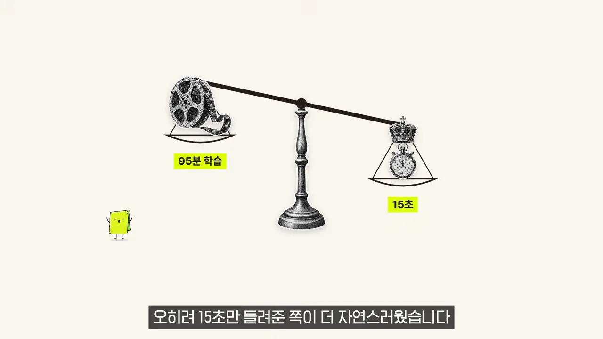
주의할 점과 무엇을 고를까
Qwen3 체험 페이지의 한계
Qwen3에도 단점이 있어요. 그림 왼쪽 모래시계는 무료 체험 페이지라 쓸 수 있는 양이 정해져 있다는 뜻이에요. 가운데 문 앞에 줄 선 사람들은 사람이 몰리면 기다려야 한다는 뜻이고요. 오른쪽 '살짝 높게' 라벨은 목소리가 실제보다 조금 높게 나올 때가 있다는 뜻이에요.
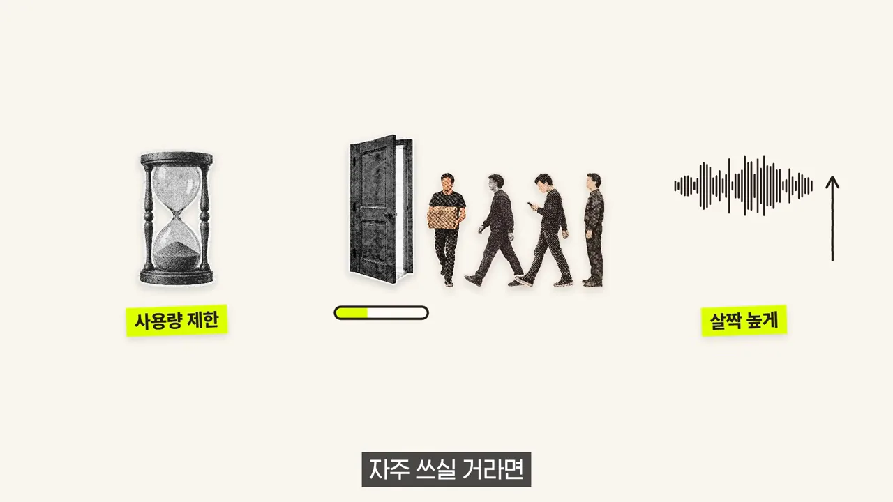
자주 쓸 거라면 내 컴퓨터에 설치해서 제한 없이 쓸 수도 있어요. 다만 성능 좋은 컴퓨터가 필요해서 영상에서는 다루지 않아요.
남의 목소리는 허락 없이 만들면 안 돼요
발표자가 꼭 지켜 달라고 한 규칙이에요. 그림에서 옆 사람 목소리는 손바닥으로 막혀 있고, 마이크에는 'OK'와 체크가 붙어 있어요. 내 목소리나 허락받은 목소리만 써야 한다는 뜻이에요.
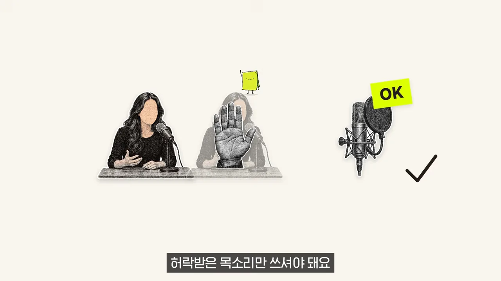
무엇을 고를까요
마무리 그림은 갈림길 양쪽에 Gemini와 Qwen3를 세워 둬요. 목소리를 골라 쓰고 싶거나 두 사람 대화가 필요하면 Gemini, 내 목소리로 읽게 하고 싶으면 Qwen3예요.
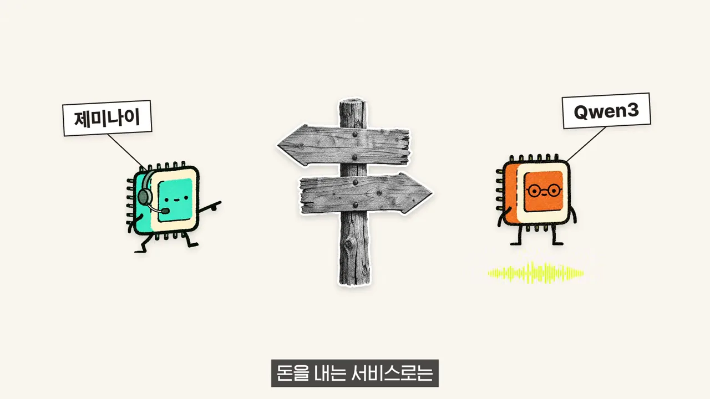
영상에서 다룬 내용을 한 표로 모으면 이래요.
| 구글 Gemini | Qwen3 | |
|---|---|---|
| 어디서 쓰나요 | 구글 AI 스튜디오 | 허깅페이스 공식 체험 페이지 |
| 목소리 | 정해진 목소리 중에서 골라요 | 내 목소리를 복제해요 |
| 준비물 | 구글 계정 | 10~15초 녹음, 녹음을 받아 적은 글 |
| 잘하는 것 | 말투를 글로 지시하기, 두 사람 대화 | 15초 녹음만으로 비슷한 목소리 |
| 단점 | 내 목소리 불가, 하루 사용량 제한, 넣은 글이 서비스 개선에 쓰일 수 있음 | 사용량 제한, 몰리면 대기, 목소리가 살짝 높게 나올 때가 있음 |
돈을 내는 서비스로는 ElevenLabs 같은 것도 있어요. 하지만 영상의 결론은 시작은 무료로도 충분하다는 거예요.